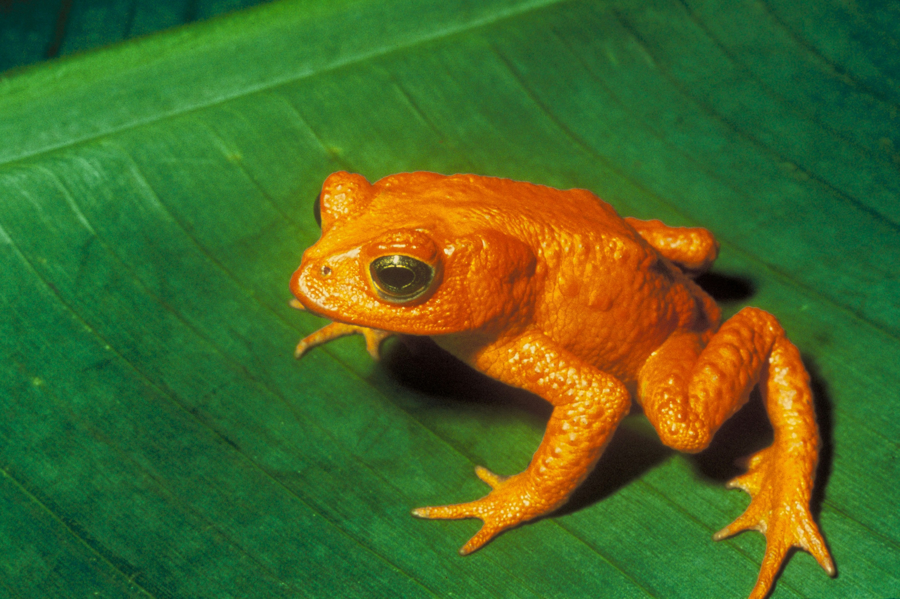

El sapo dorado fue un anfibio pequeño que vivía en Costa Rica. Es famoso porque se considera extinto

Era de color naranja o dorado brillante. Medía pocos centímetros. Vivía en bosques húmedos. Ponía huevos en pequeños charcos.
Vivía en el bosque de Monteverde, Costa Rica. Desapareció en los años 80. Se cree que se extinguió por: Cambio climático Enfermedades Pérdida de hábitat Es uno de los primeros animales en extinguirse por el calentamiento global.